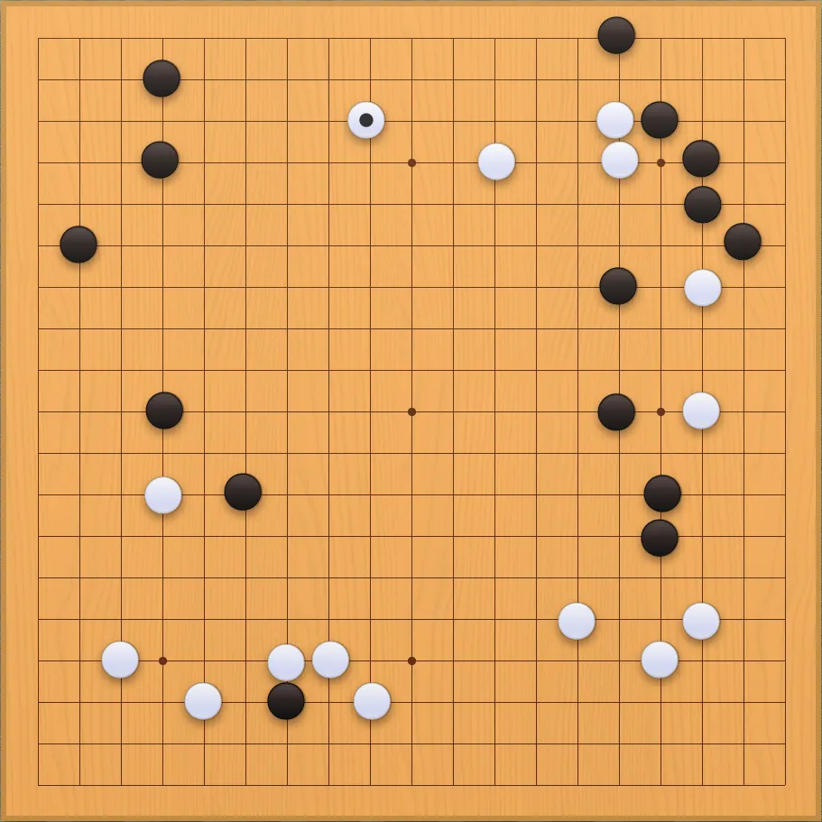
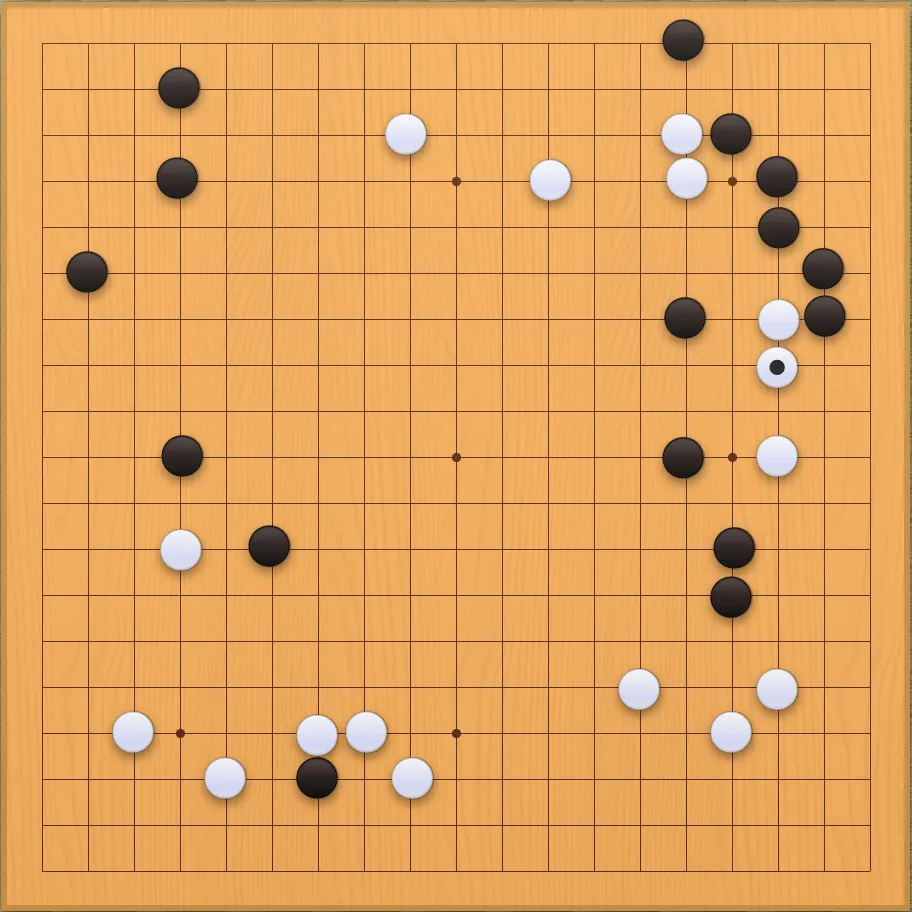
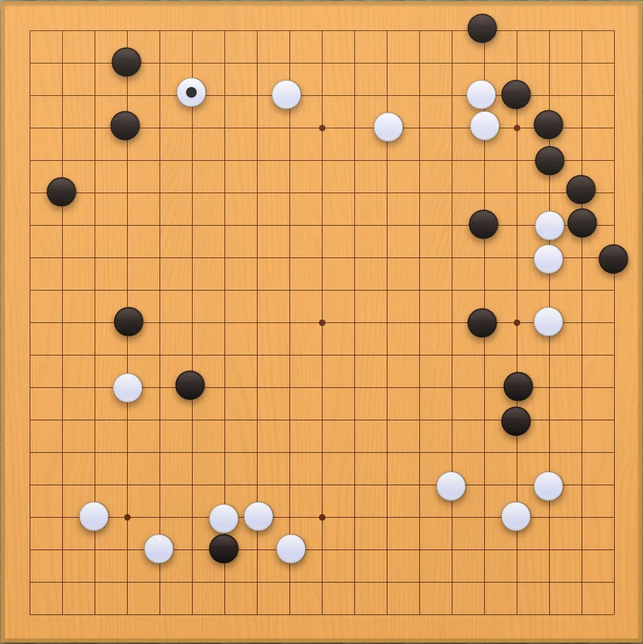
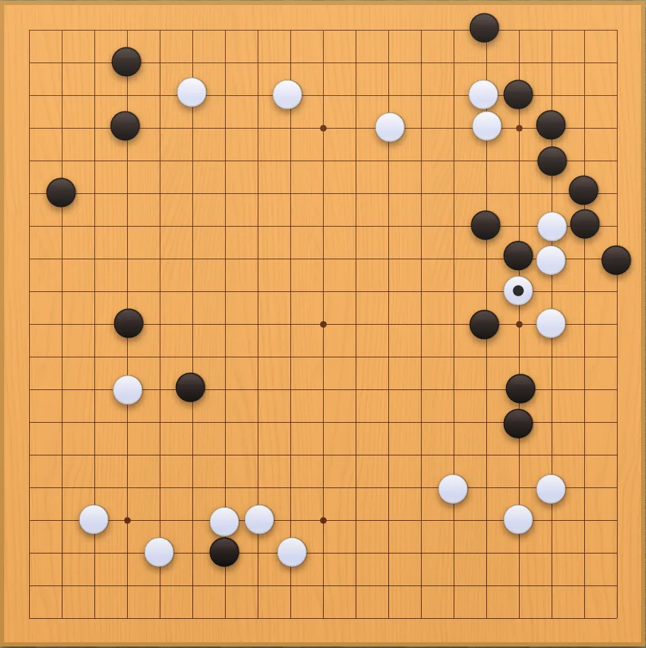
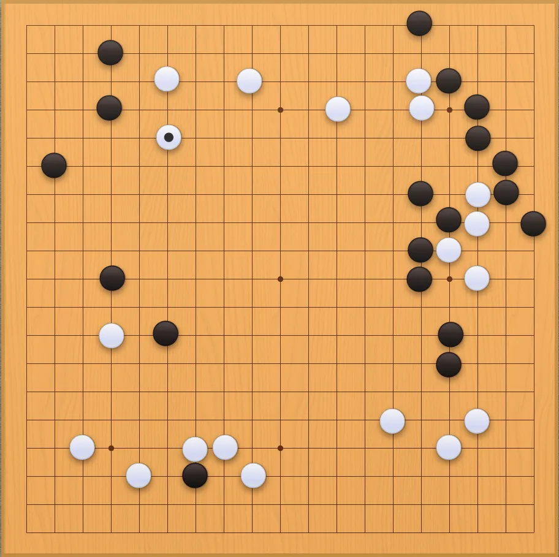
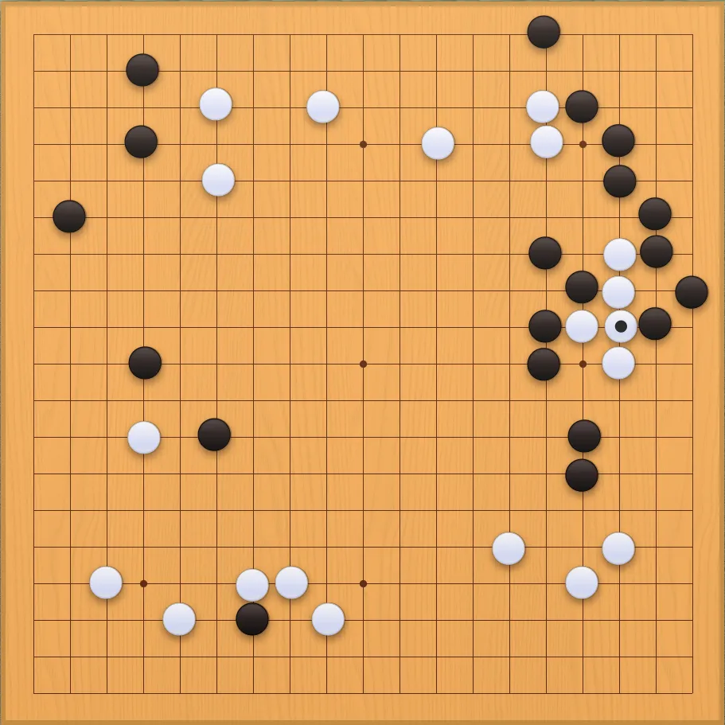
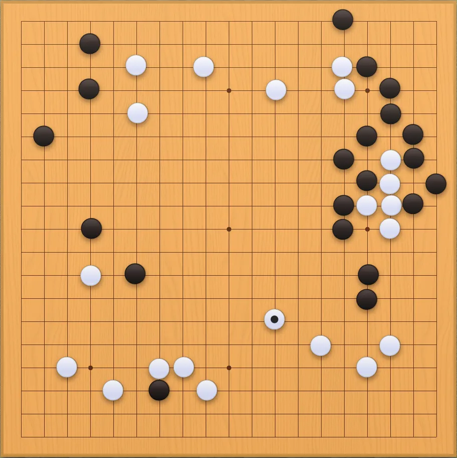

GO - Contra la máquina | Semana 3
Bienvenidos de nuevo a mi blog. Os traigo la actualización semanal de -probablemente- la peor partida de GO de todo internet. De nada.
Cada semana que pasa me pregunto lo mismo: ¿en qué momento habré pensado que realizar una partida de GO con un movimiento al día es provechoso en algún sentido?
Mis propias decisiones son un misterio para mí. Igual es lo que trato de averiguar jugando a esto cada día sin haberme tomado ni una hora de mi tiempo en aprender a jugar "bien".
Aunque a decir verdad, está siendo bastante entretenido y no hay duda de que todo este montón de patrones monocromáticos que se forman en el goban (tablero) queda de lo más aesthetic en mi blog.
Bueno vamos al tema.
Durante mis jugadas de esta semana he tratado de consolidar mi poder sobre la esquina derecha, cerrando el paso todo lo que he podido al jugador blanco y arrinconando las pocas goishi (piedras) que tenía.
Trato de ir añadiendo jerga del juego para, de alguna manera, hacer como que tengo alguna idea de lo que está pasando en el tablero.
Por otro lado, veo que poco a poco se está haciendo espacio en la esquina opuesta, a pesar de que tengo el control de los bordes.
En cuanto al inferior, no sé muy bien como abordarlo, pero creo que iré tomando poco a poco desde cualquiera de los lados de dominio hacia abajo.
Sigo teniendo pendiente estudiar más a fondo el juego para no tener la sensación de que juego a "ciegas". Pero las impresiones por ahora son buenas, parece que tengo la iniciativa y que las "arremetidas" del jugador blanco no me provocan demasiados problemas. De momento.
Y hasta aquí el resumen de esta semana. Volveré la semana que viene a demostrar que todavía puedo arruinar -más- un juego con 5000 años de antigüedad. ¡Nos vemos la próxima!







EnRoot